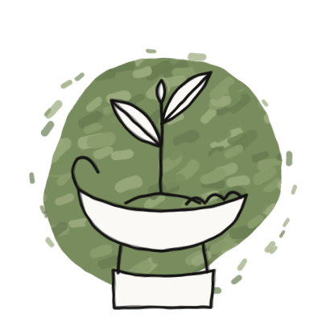
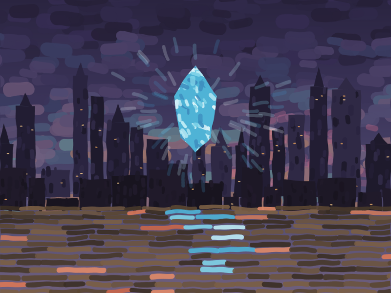
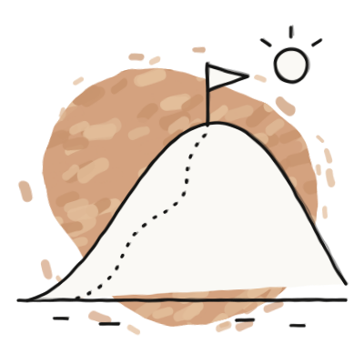

jsem Voku.
Celým jménem Vojtěch Kurinec. Je mi 16, jsem z jižních Čech a programuju, hlavně weby, hry a věci s AI. Tohle je stránka o mně, takže si klidně dej čaj…
Každý znak je jeden tah štětcem. Klikni na vodu, nebo přepni noc.
01Kdo jsem
Nejlíp se něco naučím, když to prostě postavím.

Jmenuju se Vojtěch Kurinec, ale většina lidí mě zná jako Voku. Je mi 16 a IT je moje vášeň, takže programuju, zkouším věci s AI, tisknu na 3D tiskárně, bastlím s Raspberry Pi a docela hodně mě baví hardware.
Mám za sebou spoustu vlastních projektů a naučil jsem se na nich víc než v jakékoli učebnici. Některé běží, některé jsem odložil, ale ze všech jsem si něco odnesl.
- Věk
- 16 let
- Odkud
- Jihočeský kraj
- Nejradši
- Python a Flask
- Teď stavím
- Sparks of Silt a systém pro Respawn ČB
02Co jsem dokázal
Z jedné zakázky jsou tři.
Respawn Lasergame České Budějovice byla moje první opravdu velká práce pro klienta. Musel jsem být serióznější, komunikovat profesionálně a dotáhnout to od zadání přes konzultace až po předání.
No a když web začal fungovat, ozvali se další. Díky Respawnu jsem získal zakázku pro další laser game arénu a pro jednu školu.
 V provozulasergamecb.cz
Respawn Lasergame ČB
Web a systém skutečné laser arény: rezervace, statistiky z Laserforce a tři úrovně správy. Běží naostro a pořád ho rozvíjím.
V provozulasergamecb.cz
Respawn Lasergame ČB
Web a systém skutečné laser arény: rezervace, statistiky z Laserforce a tři úrovně správy. Běží naostro a pořád ho rozvíjím.

Ve vývoji Sparks of Silt Moje vlastní hra ve stylu Arcane. Stavím ji v Unity, postavy dělám v Blenderu a hudbu k ní skládám ve vlastní Python knihovně Paprika.Tohle si můžeš hned vyzkoušet.
Tyhle projekty běží na Raspberry Pi u mě doma, takže si je můžeš rovnou proklikat. Tečka ukazuje, jestli zrovna odpovídají.
 dumbai.bakix.cz
DumbAI
Napiš třeba „3 informace o Vatikánu“ a dostaneš fakta z Wikipedie v bodech i s odkazy.
Vyzkoušet
dumbai.bakix.cz
DumbAI
Napiš třeba „3 informace o Vatikánu“ a dostaneš fakta z Wikipedie v bodech i s odkazy.
Vyzkoušet
 vr.bakix.cz
VR Lasergame
Zastřílej si přímo v prohlížeči: na počítači myší a WASD, na Questu 3 chůzí na místě.
Vyzkoušet
vr.bakix.cz
VR Lasergame
Zastřílej si přímo v prohlížeči: na počítači myší a WASD, na Questu 3 chůzí na místě.
Vyzkoušet
 lol.bakix.cz
SANDIFF
Projdi si zeď plakátů, soupisku a Diff-o-metr LoL týmu kámošů z Písku.
Vyzkoušet
lol.bakix.cz
SANDIFF
Projdi si zeď plakátů, soupisku a Diff-o-metr LoL týmu kámošů z Písku.
Vyzkoušet
 knowix.bakix.cz
Knowix
Asistent, který čte zápisy z hodin tvojí třídy a odpovídá přesně k tomu, co jste probírali.
Na vyzkoušení potřebuješ školní účet v Bakalářích nebo kód od spolužáka.
Vyzkoušet
knowix.bakix.cz
Knowix
Asistent, který čte zápisy z hodin tvojí třídy a odpovídá přesně k tomu, co jste probírali.
Na vyzkoušení potřebuješ školní účet v Bakalářích nebo kód od spolužáka.
Vyzkoušet
A pak jsou tu věci jako vlastní programovací jazyk, Tetris, který se učí hrát skutečný mozek octomilky, nebo Bakix postavený za jediný den na hackathonu a atd… Všechno je v projektech.
03Proč to dělám
Dělám věci hlavně proto, abych se posouval dál a pomáhal ostatním, ne pro slávu nebo peníze.
Spousta věcí vznikla prostě proto, že jsem je sám potřeboval. Hrbil jsem se u počítače, tak jsem si napsal PostureGuard, který přes webkameru hlídá, jak sedím, a když se hrbím, vyskočí červené okno. Otravné, ale funguje to.
A někdy z toho má radost i někdo jiný. Školní parlament dostal aplikaci LID na nápady a tajné hlasování, kámoši z Písku mají web svého LoL týmu. Když to někomu pomůže, je to nejlepší část celé práce.
04Jak pracuju
Řídím vývoj, AI dělá těžkou práci.

Snažím se programovat i „normálně“, ale nepoužívat AI v roce 2026 je jako odmítat kalkulačku v roce 2010. AI je můj nástroj, ne berlička. Klidně ať napíše kód, ale musím tomu rozumět, zabezpečit to a dostat to k lidem. A u všeho se učím pořád dokola.
Nápad
Najít problém, který stojí za to vyřešit.
Stavba s AI
AI píše kód, já vedu směr, architekturu a kontroluju to.
Nasazení
Dostat to z localhostu k reálným uživatelům.
Bezpečnost
Ošetřit data, přihlašování a slabá místa.
Testování
Projít to, najít bugy, opravit, zopakovat.
Marketing
Dostat projekt mezi lidi. A znovu od začátku.
- jazyky
- python html css javascript java
- web
- flask sqlite mysql discord boti odoo
- hry a 3d
- unity blender three.js střih videí
- hardware
- raspberry pi linux git 3d tisk ai
05Co mám rád
A když zrovna nestavím web…
Šachy
Hraju je a napsal jsem si i šachy proti AI, tak aby bylo s kým hrát.
Laser game
Tam to celé začalo. Mám vlastní statistiky a aj i verzi ve VR.
Hry
League of Legends, Minecraft a k tomu vlastní hry, takže hraní je vlastně taky práce.
Hardware
Raspberry Pi mi doma běží pořád a jede na něm i tenhle web.
3D tisk
Protože je fajn, když věc neskončí jen na obrazovce.
Arcane a Mr. Robot
Z obou mám vlastní hru, takže to asi trochu přeháním.
Sport
Občas. Aspoň se pak nehrbím, a kdyby jo, mám na to appku.
06Kam dál